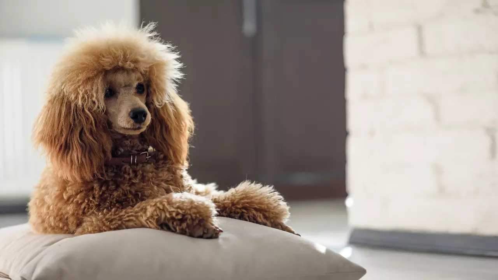

Dog rescue center

ชื่อ: จุ๊บเหม่ง
โกลเด้น รีทรีฟเวอร์เป็นสายพันธุ์สุนัขขนยาว แข็งแรง และมีความคล่องแคล่ว
สุนัขสายพันธุ์นี้มีต้นกำเนิดจากประเทศสกอตแลนด์แต่สามารถปรับตัวได้กับทุกพื้นที่และทุกสภาพแวดล้อมจึงกลายเป็นสุนัขที่ได้รับความนิยมในหลายๆ
ประเทศ
- ลักษณะนิสัย : ใจดี ขี้เล่น อ่อนโยน และเป็นมิตร
- ลักษณะทางกายภาพ : รูปร่างใหญ่ ขนฟู ส่วนใหญ่มีสีน้ำตาลทอง น้ำตาลอ่อน หรือน้ำตาลเข้ม หูสั้น
- อายุ : 4 ปี

ชื่อ: ป๊อกกี๊
สายพันธุ์น้องหมาที่มีความโดดเด่นไม่แพ้กับพันธุ์อื่นๆ เนื่องจากขนจะมีลักษณะหยิก หนา และฟูทั่วตัว
ช่วยเพิ่มความน่ารักได้เป็นอย่างดี จนครองใจเหล่าทาสหมาหลายๆ คน
- ลักษณะนิสัย : คล่องแคล่ว ปราดเปรียว ชื่นชอบการเล่นน้ำและการเห่า
- ลักษณะทางกายภาพ : ลำตัวมีขนาดเล็กไปจนถึงกลาง ขนหนา หยิก และฟู คอยาว ปากยื่นแหลมออกมาข้างหน้า
- อายุ : 3 ปี

ชื่อ: จอร์จ
สุนัขพันธุ์ใหญ่ ที่แม้จะมีหน้าตาน่าเกรงขาม แต่บุคลิกและนิสัยกลับตรงกันข้าม
กลายเป็นสุนัขที่คนส่วนใหญ่นิยมเลี้ยงไว้เพื่อกู้ภัย หรือเฝ้าบ้าน
- ลักษณะนิสัย : ซื่อสัตย์ อ่อนโยน รักสงบ
- ลักษณะทางกายภาพ : รูปร่างใหญ่ กำยำ น่าเกรงขาม ตากลมโต
- อายุ : 5 ปี

ชื่อ: เจสัน
หากพูดถึงสุนัขที่มีหน้าตาหล่อ ขนสวย และรูปร่างดี “ไซบีเรียน ฮัสกี้” อาจจะเป็นหนึ่งในชื่อที่หลายๆ คนนึกถึง
แต่อาจจะต้องระวังเรื่องสภาพอากาศเป็นพิเศษ เนื่องจากเดิมทีเลี้ยงเป็นสุนัขลากเลื่อน
อาศัยอยู่ในสภาพแวดล้อมที่มีอุณหภูมิหนาวเย็น
- ลักษณะนิสัย : ร่าเริง เป็นมิตร ขี้เล่น
- ลักษณะทางกายภาพ : หูตั้ง ขนสีขาว ผสมกับสีเทา หรือดำ ดวงตามีสีสวยต่างจากสายพันธุ์อื่น
- อายุ : 2 เดือน
Student ID: 6833258021
Full name: suphachok Chosanthia